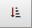

To assist users in redacting image text, you
can define “redaction categories” to redact specific image
content. By default, Review provides one redaction category, up to 99 redaction categories can be defined.
-
Cases created from an existing case include
the redaction categories defined for that case.
-
Cases created from a .CSE file, may include
the redaction categories defined in the .CSE file (including the redaction categories
is optional).
-
Cases created based on a blank template include
the default redaction category.
Changes to redaction categories can be made after case review
begins (except that redaction categories that have been applied cannot be deleted).
For a particular case, redaction categories may not be needed, in which case you
can remove the default redaction category.
-
Redaction labels and naming consistency
-
Redaction color and font color (legibility
and color coding)
-
Redaction order (most frequently applied redactions
are typically first)
|

|
Note: By default, redactions are
listed in alphanumeric order in the Case View panel and
in ID order in the Image tab.
|
Also consider the information users will need in order
to properly use redaction and create appropriate case instructions.
-
Review Manage Review Case Settings for instructions on opening the case settings options.
-
Click the Redactions Categories tab.
-
In the Redaction Categories panel on the left side panel, click .
-
Enter a label for the redaction category that will
be meaningful to users.
-
Colors:
Select redaction and font colors.
-
Evaluate the sample text for legibility.
-
Permissions:
If the redaction category should be restricted to certain review groups:
- Click the hyperlink Add/Remove Groups to open the Group Security dialog.
-
Select
needed groups and click OK.
|

|
Tip: To make a redaction category available to all groups that are currently
defined for the case, click Select All. The form will be unavailable
for groups added after this selection (unless you add them).
|
-
When finished, click  .
.
-
Optional: In the Redaction Category panel on the left, point, click and drag the ID number to the desired position
in the redaction list. The ID number changes to reflect the new position for the redaction category.
|
|
Note: If you wish to sort the redaction categories, click  to display the sort menu and choose an option.
|
-
Repeat these steps to define additional redaction categories.
-
Review Manage Review Case Settings for instructions on opening the case settings options.
-
Click the Redactions Categories tab.
-
Select the pre-defined redaction category from the left side panel.
|
|
Note: If you wish to sort the redaction categories, click to display the sort menu and choose an option.
|
-
To delete
the selected redaction category, click  , then click
OK in response to the confirmation
message.
, then click
OK in response to the confirmation
message.
|
|
Tip: If a
redaction has been applied, it cannot be deleted; a message will
alert you if you attempt to delete a redaction that has been applied.
|
-
To revise
the selected redaction category, click and change the label, redaction color, font color, and/or change security.
-
When finished, click .
-
Notify users of the changes that were
made.